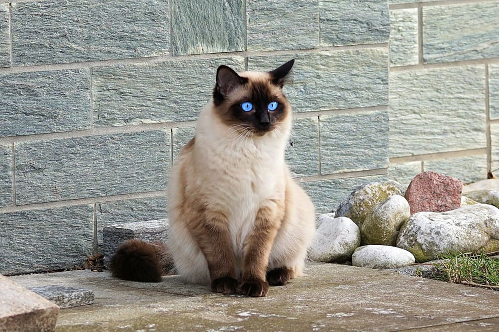
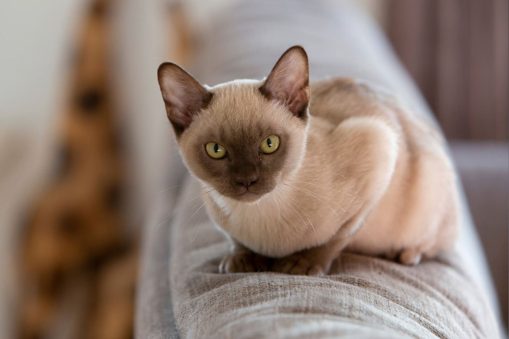
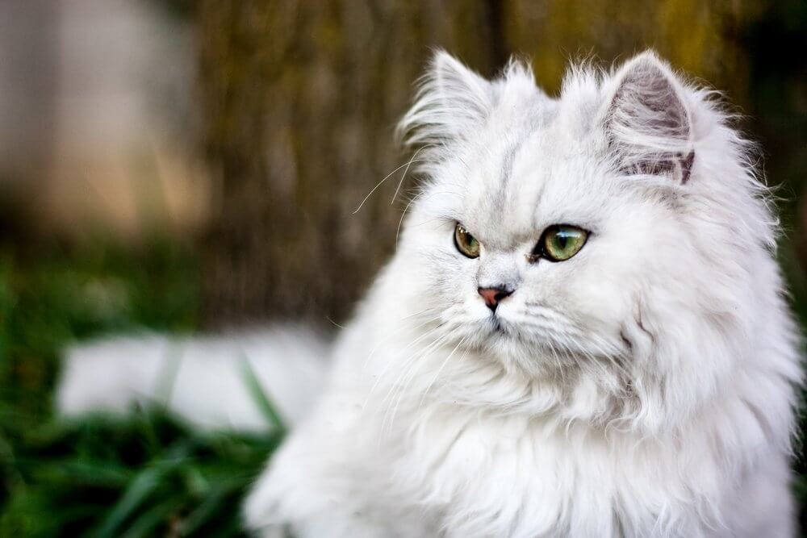
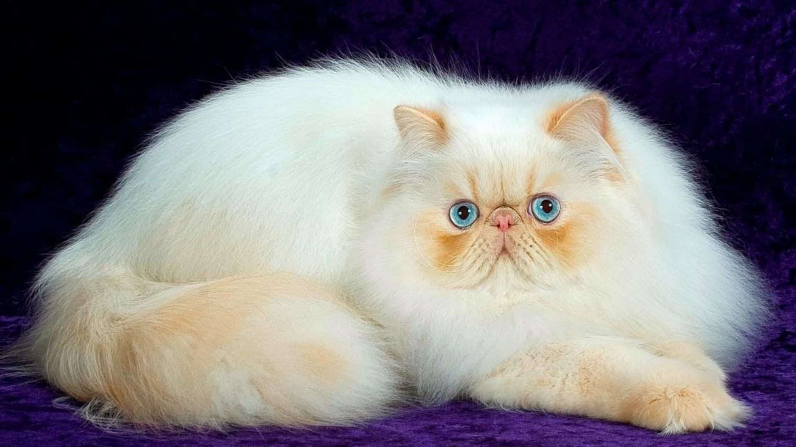
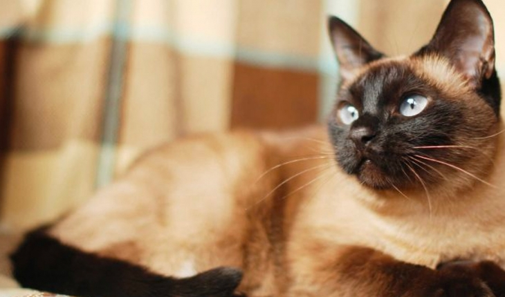

KEDİ CİNSLERİ
- 
-
Birman kedileri, orta büyüklükte, güçlü yapılı ve tüyleri uzun bir kedi cinsidir. Genellikle yuvarlak bir yüz, büyük parlak mavi gözler ve düz bir burunları vardır. Tüyleri ipeksi, pürüzsüz ve parlaktır.
Birman kedileri, sakin ve sevecen bir doğaya sahiptirler. Enerjik olmalarına rağmen, genellikle evde sakin ve sessiz kalırlar. Sahiplerine bağlılıkları ile bilinirler ve onlarla sıkı bir bağ kurarlar. Ayrıca diğer evcil hayvanlarla da uyumlu olabilirler.
- 
-
Burmese kedileri, Orta Asya kökenli, kısa tüylü bir kedi cinsidir. Orta büyüklükte ve kaslı yapıya sahiptirler. Gözleri, turuncu-kahverengi renkte olup, yüzlerinde bir kara beneklerle birlikte belirgin bir şekilde görülürler.
Burmese kedileri oldukça sosyal ve sevecen hayvanlardır. Sahipleriyle sıkı bir bağ kurma eğilimindedirler ve yüksek enerjili bir yapıya sahiptirler. Ayrıca oyun oynamayı ve keşfetmeyi severler, bu nedenle düzenli egzersiz ihtiyaçları vardır.
- 
-
Chinchilla kedileri, orta boyutlu, zarif ve ince kemikli bir kedi cinsidir. Gözleri genellikle büyük, mavi veya yeşil renktedir. Tüyleri yumuşak, ipeksi ve parlaktır ve genellikle gümüş veya altın rengindedir.
Chinchilla kedileri, sakin ve sevecen bir yapıya sahiptirler. Sahiplerine karşı bağlılıklarıyla bilinirler ve sıklıkla insanlarla vakit geçirmeyi severler. Diğer evcil hayvanlarla da uyumlu olabilirler.
-

-
Devon Rex kedileri, orta boyutlu, tüyleri kıvırcık, büyük kulaklı ve genellikle gözleri büyük ve renkli bir kedi cinsidir. Tüyleri ipeksi, yumuşak ve pürüzsüzdür. Kıvırcık tüyleri sayesinde farklı bir görünüme sahip olan Devon Rex, kendine özgü bir tarza sahiptir.
Devon Rex kedileri, sevecen, sosyal ve enerjik bir yapıya sahiptirler. Sahipleriyle sıkı bir bağ kurma eğilimindedirler ve yüksek düzeyde zeka ve oyunculuk sergilerler.
-
Exotic Shorthair kedileri, kısa tüylü ve yuvarlak yüzlü bir kedi cinsidir. İri ve yuvarlak gözleri, düz bir burunu ve güçlü bir vücudu vardır. Tüyleri sıkı ve pürüzsüzdür ve genellikle çeşitli renklerde olabilir.
Exotic Shorthair kedileri, sevecen, sakin ve oyuncu bir yapıya sahiptirler. Sahipleriyle sıkı bir bağ kurarlar ve insanların ilgisini severler. Diğer evcil hayvanlarla ve çocuklarla da uyumlu olabilirler.
- 
-
Persian (Fars) kedileri, muhteşem tüyleri ve yuvarlak yüzleriyle ünlü bir kedi cinsidir. Geniş, yuvarlak gözleri, küçük kulakları ve geniş burun delikleri vardır. Tüyleri uzun, yoğun ve pürüzsüzdür ve çeşitli renklerde olabilir.
Persian kedileri, genellikle sakin ve sevecen bir yapıya sahiptirler. Sahipleriyle yakın bir bağ kurarlar.
- 
-
Siyam kedileri, Asya kökenli, zarif, orta boyutlu bir kedi cinsidir. Tüyleri kısa, sıkı ve pürüzsüzdür. Gözleri badem şeklindedir ve mavi renktedir. Siyam kedileri, tüylerinin rengiyle karakterize edilir. Tüylerinin vücut sıcaklığına göre renk değiştirme özelliği de vardır.
Siyam kedileri, canlı, enerjik ve sosyal bir yapıya sahiptirler. Sahipleriyle sıkı bir bağ kurarlar ve yüksek düzeyde zeka ve oyunculuk sergilerler.
-
Snowshoe kedileri, orta boyutlu, zarif ve sıra dışı bir kedi cinsidir. Gözleri genellikle mavi veya yeşil renktedir ve tüyleri kısa ve pürüzsüzdür. Ayaklarında beyaz patileri vardır, bu da onlara "snowshoe" adını veren özelliktir.
Snowshoe kedileri, sakin, sevecen ve oyuncu bir yapıya sahiptirler. Sahipleriyle sıkı bir bağ kurma eğilimindedirler ve yüksek düzeyde zeka ve meraklılık gösterirler. Ayrıca diğer evcil hayvanlarla ve çocuklarla uyumlu olabilirler.